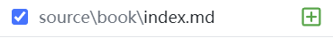

Hexo 站点配置（补充）
前言
之前已经写过一些Hexo站点配置了，看到了一些新颖的（花里胡哨的）设置后，想曾加到我的网站上。
原来的Hexo站点配置记录：“Hexo安装日志”的“Hexo 配置”章节
让Hexo博客支持emoji显示
首先卸载hexo-renderer-marked，一定要卸载，不然hexo还是会默认选择这个作为markdown渲染引擎，如果卸载报错，删除package.json中hexo-renderer-marked这一行然后删除node_module重新安装依赖就好啦
npm un hexo-renderer-marked -S安装hexo-renderer-markdown-it和markdown-it-emoji
npm i hexo-renderer-markdown-it markdown-it-emoji -S更改站点配置
markdown:
render:
html: true
xhtmlOut: false
breaks: true
linkify: true
typographer: true
quotes: '“”‘’'
plugins:
- markdown-it-abbr
- markdown-it-footnote
- markdown-it-ins
- markdown-it-sub
- markdown-it-sup
- markdown-it-emoji
anchors:
level: 2
collisionSuffix: 'v'
permalink: true
permalinkClass: header-anchor
permalinkSymbol: ''Hexo 隐藏文章
本 Hexo 插件可以隐藏指定的文章，并使它们仅可通过链接访问。
当一篇文章被设置为「隐藏」时，它不会出现在任何列表中（包括首页、存档、分类页面、标签页面、Feed、站点地图等），也不会被搜索引擎索引（前提是搜索引擎遵守 noindex 标签）。
只有知道文章链接的人才可以访问被隐藏的文章。
https://github.com/prinsss/hexo-hide-posts/blob/master/README_ZH.md
¶安装
npm install hexo-hide-posts --save¶配置
在站点目录下的_config.yml中如下配置：
# hexo-hide-posts
hide_posts:
# 可以改成其他你喜欢的名字
filter: hidden
# 指定你想要传递隐藏文章的位置，比如让所有隐藏文章在存档页面可见
# 常见的位置有：index, tag, category, archive, sitemap, feed, etc.
# 留空则默认全部隐藏
public_generators: []
# 为隐藏的文章添加 noindex meta 标签，阻止搜索引擎收录
noindex: trueHexo 文章模板设置
参考：hexo 文章模板设置
模板文件信息位于./scaffold 文件夹下的 post.md 和 draft.md
对应就是 hexo new [layout] <title> 中的 layout , 默认为 post, 草稿为 draft, 如果标题包含空格的话，请使用引号括起来。
---
title: {{ title }}
date: {{ date }}
tags:
categories:
---
点击阅读前文前, 首页能看到的文章的简短描述
<!-- more -->自定义界面
使用： hexo new page "XXX" 新建一个自定义页面，例如
hexo new page "book"编辑\source\book\index.md

---
title: 阅读
date: 2022-10-15 20:54:19
type: "book"
---编辑主题配置文件_config.yml
menu:
home: / || fa fa-home
about: /about/ || fa fa-user
tags: /tags/ || fa fa-tags
categories: /categories/ || fa fa-th
archives: /archives/ || fa fa-archive
#schedule: /schedule/ || fa fa-calendar
#sitemap: /sitemap.xml || fa fa-sitemap
#commonweal: /404/ || fa fa-heartbeat
阅读: /book/ || fa fa-book插入音视频
¶安装hexo-tag-mmedia
安装命令
npm install hexo-tag-mmedia@1 --save¶配置
- 配置项较多目的是给予最大的自定义权限，默认情况下不做配置也可以使用。
- 配置文件放在博客根目录的
_config.yml中 - default 为默认配置，在
_config.yml中填写就不需要在每个标签全部写入了，所有允许在 mmedia 标签上写入的配置项，均可在 default 下配置。
模板
mmedia:
audio:
default:
video:
default:
aplayer:
js: https://cdn.jsdelivr.net/npm/aplayer@1/dist/APlayer.min.js
css: https://cdn.jsdelivr.net/npm/aplayer@1/dist/APlayer.min.css
default:
contents:
meting:
js: https://cdn.jsdelivr.net/npm/meting@2/dist/Meting.min.js
api:
default:
dplayer:
js: https://cdn.jsdelivr.net/npm/dplayer@1/dist/DPlayer.min.js
hls_js: https://cdn.jsdelivr.net/npm/hls.js/dist/hls.min.js
dash_js: https://cdn.jsdelivr.net/npm/dashjs/dist/dash.all.min.js
shaka_dash_js: https://cdn.jsdelivr.net/npm/shaka-player/dist/shaka-player.compiled.js
flv_js: https://cdn.jsdelivr.net/npm/flv.js/dist/flv.min.js
webtorrent_js: https://cdn.jsdelivr.net/npm/webtorrent/webtorrent.min.js
default:
contents:
bilibili:
default:
page: 1
danmaku: true
allowfullscreen: allowfullscreen
sandbox: allow-top-navigation allow-same-origin allow-forms allow-scripts allow-popups
width: 100%
max_width: 850px
margin: auto
xigua:
default:
autoplay: false
startTime: 0
allowfullscreen: allowfullscreen
sandbox: allow-top-navigation allow-same-origin allow-forms allow-scripts allow-popups
width: 100%
max_width: 850px
margin: auto¶示例
默认开启弹幕
{% mmedia "bilibili" "bvid:BV1vJ411U7Ji" %}关闭弹幕失败
{% mmedia "bilibili" "bvid:BV1vJ411U7Ji" "danmaku:false" %}